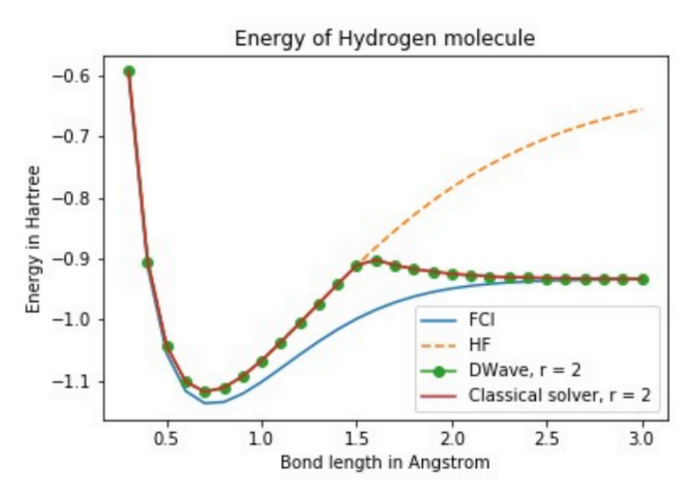
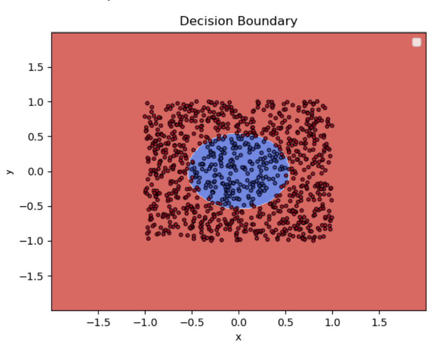

Biography
I am a Ph.D student in the Department of Physics and Astronomy, and a Master student in the Department of Computer Science at University of Southern California (USC), Los Angeles. I am generally interested in quantum computing, machine learning, data mining and artificial intelligence. I am the admin of a quantum computing website. I have some experience in coarse-grained modeling and simulation of DNAs and proteins. My current research is about applications of D-Wave quantum computer in molecules and machine learning.
Ongoing Projects

Electronic Structure calculation using D-Wave quantum computer
I implemented the algorithm in the paper "Electronic Structure Calculations and the Ising Hamiltonian" and solved electronic structure calculation for Hydrogen molecule using D-Wave. However, this algorithm suffers from exponential space complexity, which prevents studying larger molecules on the current quantum computer device. I am currently working on improving their algorithm.
Imbalanced Classification using D-Wave synthesized data
In the paper "Quantum annealing versus classical machine learning applied to a simplified computational biology problem", the authors showed that their approach of combining ground states and excited states obtaining by D-Wave produced a better AUC when the classification problem was highly imbalanced. I am interested in using D-Wave to synthesize data for the minority class and improve the accuracy for imbalanced classification.

Publications
- Pengzhi Zhang, Swarnendu Tripathi, Hoa Trinh, Margaret S Cheung, Opposing Intermolecular Tuning of Ca 2+ Affinity for Calmodulin by Neurogranin and CaMKII Peptides, Biophysical Journal (2017).
- Trinh X. Hoang, Hoa Lan Trinh, Achille Giacometti, Rudolf Podgornik, Jayanth R. Banavar, and Amos Maritan, Phase diagram of the ground states of DNA condensates, Physical Review E (2015).